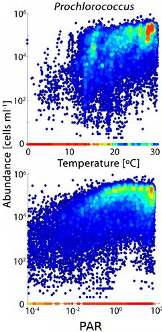

- The average cell size of Prochlorococcus populations does not follow the temperature size rule
- Unimodal relationship between cell-size and temperature both during exponential and stationary phases
- Increase in size during stationary phase due to cells transitioning to G0
- Evolution of growth rate with time and adaptation to extreme warm temperatures
- Changing temperature size relationships during the 24 hour cycle